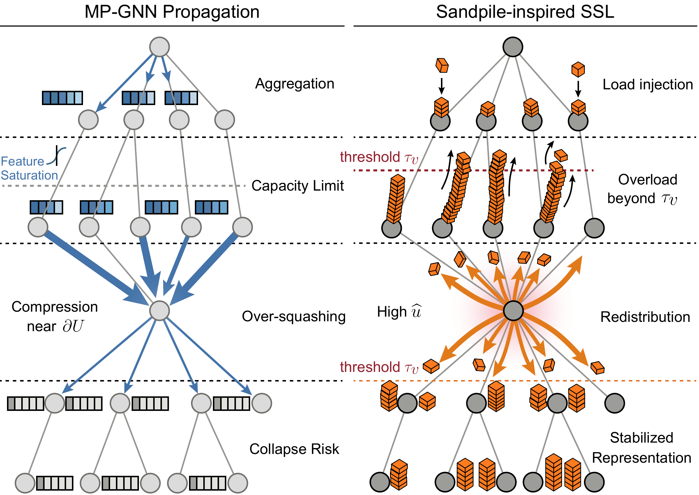
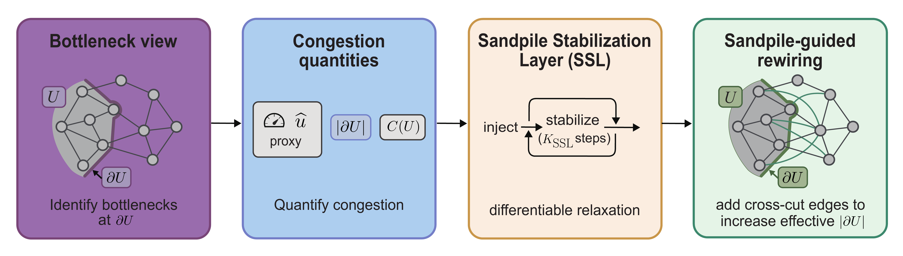
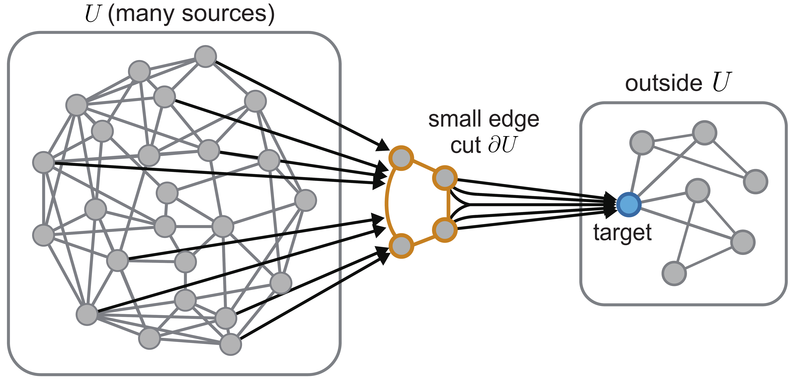

Capacity
Nodes keep stable load up to a learned threshold, then release only the overload.
SIGKDD 2026
*Equal contribution · †Corresponding author

Abstract
Message-passing graph neural networks (MP-GNNs) are widely used for learning on relational data. However, their performance drops on tasks requiring long-range interactions due to over-squashing, where exponential information compression overwhelms fixed-width embeddings. While existing analyses often attribute this to geometric bottlenecks under linear diffusion assumptions, thresholded nonlinearities in GNNs motivate a load-release view akin to Abelian sandpiles. Using the discrete sandpile model as a structural proxy, we show that graph bottlenecks force large stabilization cost, effectively creating zones of high transport congestion. We characterize stabilization-invariant equivalence classes induced by the reduced Laplacian and derive cut-based lower bounds linking bottlenecks to unavoidable stabilization effort. The resulting theory is discrete, whereas our implementation is a continuous vector-valued surrogate. The theory identifies the relevant design factors, namely capacity and cut size. Guided by these insights, we propose a differentiable Sandpile Stabilization Layer (SSL) and congestion-aware objectives designed to redistribute excess load and manage stabilization costs.
Core Idea
The sandpile lens separates two structural levers: how much load a region can store, and how many edges let load leave that region.
Nodes keep stable load up to a learned threshold, then release only the overload.
Small boundaries force many sources to share few transport routes across a bottleneck.
Cumulative release becomes a differentiable congestion signal for regularization and rewiring.
Method
The framework identifies narrow cuts, measures congestion with an odometer-like signal, and adds targeted cross-cut edges under a small budget.

If a region receives more load than it can stably store, excess must cross its boundary. When that boundary is small, some node must repeatedly release load, producing a high congestion signal.
